分治策略和寻找最大子数组
分治策略
许多有用的算法在结构上是递归的：为了解决一个给定的问题，算法一次或多次递归的调用其自身以解决紧密相关的若干子问题。这些算法典型地遵循分治法的思想：将原问题分解为几个规模较小但类似于原问题的子问题，递归地求解这些子问题，然后再合并这些子问题的解来建立原问题的解。
分治模式在每层递归的时候都有三个步骤：
- 分解 （Divide）步骤将问题划分为一些子问题，子问题的形式与原问题一样，只是规模更小。
- 解决 （Conquer）步骤递归地求解出子问题。如果子问题的规模足够小，则停止递归，直接求解。
- 合并 （Combine）步骤将子问题的解组合成原问题的解。
当子问题足够大，需要递归求解时，我们称之为*递归情况*（recursive case）。当子问题变得足够小，不再需要递归时，我们说递归已经“触底”，进入了 基本情况 （base case）。
有三种求解递归式的方法，即得出算法的“Theta”或“O”渐进解的方法：
- 代入法 —— 我们猜测一个解，然后用数学归纳法证明这个解是正确的。
- 递归树法 —— 将递归式转换为一棵树，其结点表示不同曾测的递归调用产生的代价。然后采用边解和技术来求解递归式。
- 主方法 —— 可求解形如下面公式的递归式的解：
T(n) = aT(n/b) + f(n)
其中 a>=1, b>1, f(n)是一个给定的函数。这种形势的递归式很常见，它刻画了这样一个分治算法：生成 a 个子问题，每个子问题的规模是原问题规模的 1/b，分解和合并步骤总共花费时间为 f(n)。
2.最大子数组问题
寻找 A 的和最大的非空连续子数组。我们称这样的连续子数组为 最大子数组 。
数组 A[low..high]的一个最大子数组 A[i..j]所处的位置必然是下面三种情况之一：
- 完全位于子数组 A[low..mid]中，因此 low <=i <=j <mid。
- 完全位于子数组 A[mid+1..hight]中，因此 mid < i <= j <= high。
- 跨越了中点 mid，因此 low <= i <= mid <= j <= high。
我们可以递归的求解 A[low..mid]和 A[mid+1..high]的最大子数组，因为这两子问题仍是最大子数组问题，只是规模更小。因此，剩下的全部工作就是寻找跨越中点的子数组，然后求这三种情况中的最大值。
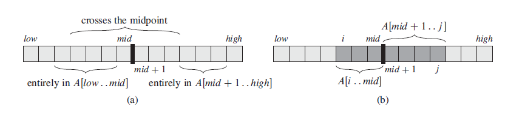
图1 最大子数组
如图(b)，任何跨越中点的子数组都由两个子数组 A[i..mid]和 A[mid+1..j]组成，因此我们只需要找出形如 A[i..mid]和 A[mid+1..j]的最大子数组，然后将其合并即可。
C 语言求解最大子数组问题代码：
#include #include #define MIN -65535 struct maxsubarr { int max_left; int max_right; int max_sum; }; struct maxsubarr find_max_crossing_subarray(int *A, int low, int mid, int high) { /* * 求解跨越中点的最大子数组函数 */ int i, j, sum, left_sum, right_sum; int max_left, max_right; struct maxsubarr max; //left_sum = -(pow(2, sizeof(int) * 8)); left_sum = MIN; sum = 0; for (i = mid; i>= low; i--) { sum = sum + A[i]; if (sum > left_sum) { left_sum = sum; max.max_left = i; } } //right_sum = -(pow(2, sizeof(int) * 8)); right_sum = MIN; sum = 0; for (j = mid + 1; j <= high; j++) { sum = sum + A[j]; if (sum > right_sum) { right_sum = sum; max.max_right = j; } } max.max_sum = left_sum + right_sum; return(max); } struct maxsubarr find_maximum_subarray(int *A, int low, int high) { int mid; struct maxsubarr left, right, cross; if (high == low) { /* base case: only one element */ cross.max_left = low; cross.max_right = high; cross.max_sum = A[low]; return(cross); } else { mid = (low + high) / 2; left = find_maximum_subarray(A, low, mid); right = find_maximum_subarray(A, mid + 1, high); cross = find_max_crossing_subarray(A, low, mid, high); if (left.max_sum >= right.max_sum && left.max_sum >= cross.max_sum) return(left); else if (right.max_sum >= left.max_sum && right.max_sum >= cross.max_sum) return(right); else return(cross); } } int main(void) { int A[16] = {13, -3, -25, 20, -3, -16, -23, 18, 20, -7, 12, -5, -22, 15, -4, 7}; struct maxsubarr max_subarray; max_subarray = find_maximum_subarray(A, 0, 15); printf("left: %d, right: %d, maxsum: %d\n", max_subarray.max_left, max_subarray.max_right, max_subarray.max_sum); }
其时间复杂度为 O(nlgn)，实际上还有一个线性时间的算法，并未使用分治法。
线性时间算法的 C 代码：
#include int find_maximum_subarray_liner(const int A[],int n) { int thisum, maxsum, i; thisum = maxsum = 0; for(i = 0; i < n; i++) { thisum += A[i]; if(thisum > maxsum) maxsum = thisum; else if(thisum < 0) thisum = 0; } return maxsum; } int main(void) { int A[16] = {13, -3, -25, 20, -3, -16, -23, 18, 20, -7, 12, -5, -22, 15, -4, 7}; int maxsubarr; maxsubarr = find_maximum_subarray_liner(A, 16); printf("maxsubarray: %d\n", maxsubarr); }
上面这个代码是转载别人的，原文链接：http://blog.csdn.net/v_JULY_v/article/details/6444021
附主定理：
假设有递推关系式
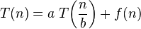
，其中
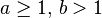
其中， n 为问题规模， a 为递推的子问题数量， n/b 为每个子问题的规模（假设每个子问题的规模基本一样）， f(n) 为递推以外进行的计算工作。
情形一
如果存在常数 ，有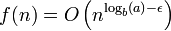，并且是多项式的小于 那么
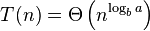
图4 T(n) = Θ\left( n\^{log\_b a} \right)
情形二
如果存在常数 k ≥ 0，有
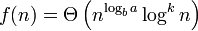
图5 f(n) = Θ\left( n\^{log\_b a} log\^{k} n \right)
那么
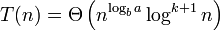
图6 T(n) = Θ\left( n\^{log\_b a} log\^{k+1} n \right)
情形三
如果存在常数 ，有
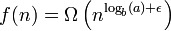 ，并且是多项式的大于
同时存在常数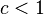以及充分大的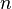，满足
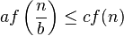
图7 a f\left( \frac{n}{b} \right) ≤ c f(n)
那么
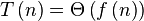
图8 T\left(n \right) = Θ \left(f \left(n \right) \right)
摘自维基百科：http://zh.wikipedia.org/wiki/%E4%B8%BB%E5%AE%9A%E7%90%86